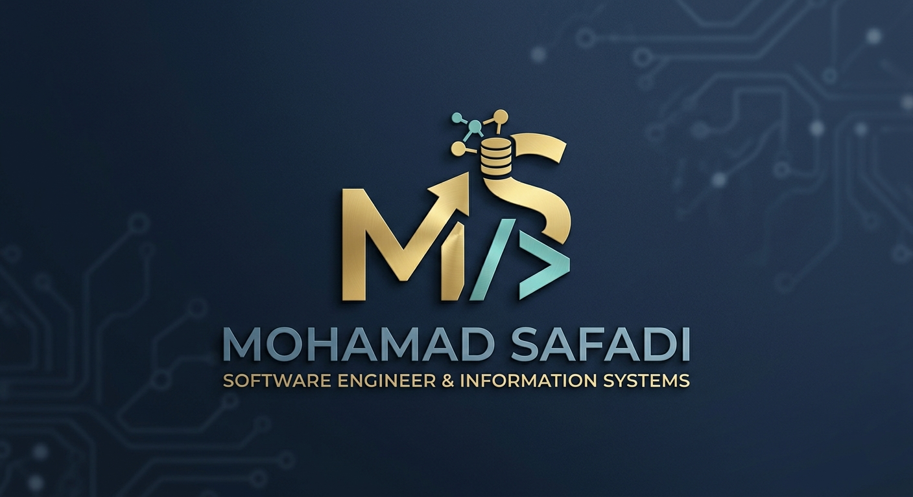

Complaint Management System
نظام لإدارة الشكاوى يتيح للمستخدمين تسجيل الشكوى، متابعة حالتها، وللمشرفين إدارة الردود وتحديث الحالات. شامل لعمليات CRUD، توثيق API، وصفحات إدارة مبسطة.
أنا مهندس برمجيات ونظم معلومات، أمتلك خبرة في تصميم وتطوير الأنظمة والتطبيقات، وبناء حلول برمجية موثوقة وقابلة للتوسع والصيانة باستخدام مجموعة متنوعة من التقنيات الحديثة.
Software Engineer specializing in backend development, with a strong foundation in software engineering and information systems. Experienced in developing reliable, scalable, and maintainable backend applications and RESTful APIs using modern software development practices. Strong problem-solving skills with a focus on writing clean, efficient, and high-quality code. Experienced in collaborating with software development teams, understanding business requirements, and delivering effective technical solutions. Committed to continuous learning and improvement, with the ability to adapt to changing requirements, work effectively under pressure, and take ownership of tasks throughout the software development lifecycle.

مجموعة من المهارات التقنية ومفاهيم هندسة البرمجيات التي أستخدمها لبناء أنظمة منظمة، قابلة للتوسع، وآمنة وقابلة للصيانة.
تصميم الأنظمة وتحليل المتطلبات وبناء معماريات برمجية مرنة.
تطوير خدمات Backend وربط التطبيقات بقواعد البيانات والخدمات.
لغات وأطر متعددة لتطوير تطبيقات الويب والأنظمة والواجهات التفاعلية.
أدوات التطوير وجودة الكود وإدارة النسخ والأنظمة المؤسسية.
مفاهيم متقدمة لبناء أنظمة عالية الأداء، متزامنة، موزعة وقابلة للتوسع.
مهارات شخصية ومهنية تدعم التواصل الفعال والعمل المستمر على التطور.
نظام لإدارة الشكاوى يتيح للمستخدمين تسجيل الشكوى، متابعة حالتها، وللمشرفين إدارة الردود وتحديث الحالات. شامل لعمليات CRUD، توثيق API، وصفحات إدارة مبسطة.
منصة خدمات متكاملة تربط العملاء بمقدمي الخدمات، من إنشاء الطلب واستقبال العروض والتفاوض والمحادثة، وصولًا إلى الدفع الإلكتروني وإتمام الخدمة والتقييم.
نظام لاسترجاع المعلومات وبناء محرك بحث مخصص باستخدام TF-IDF وBM25 وEmbeddings وHybrid Retrieval، مع معالجة الاستعلامات وترتيب النتائج وتقييم أداء النظام.
تطبيق خيري لإدارة الجمعية والتبرعات، مع تسجيل دخول للمستخدمين والمديرين، الدفع الإلكتروني، إدارة طلبات الاستفادة، التبرعات العينية، ولوحة تحكم متكاملة وإحصائيات.
مشروع مترجم يركز على بناء محلل لغوي باستخدام ANTLR وJava، بدءًا من القواعد المعجمية والنحوية، وبناء AST وعرضها، بالإضافة إلى بناء جدول الرموز.
منصة رقمية للاستشارات والخبراء تتيح البحث عن الخبراء وحجز المواعيد والدفع والمحافظ الإلكترونية، مع المراسلة والتقييمات والمفضلة ودعم العربية والإنجليزية والمكالمات الصوتية باستخدام Agora.
نظام إدارة مصرفية مبني باستخدام Java ومبادئ البرمجة كائنية التوجه، مع تطبيق مجموعة من Design Patterns لبناء نظام مرن وقابل للتوسع وسهل الصيانة، بالإضافة إلى JWT والأمان، التخزين المؤقت، الإشعارات، المعاملات المالية، التقارير، واختبارات الوحدات.
نظام محاكاة لإطلاق صاروخ والتحكم به مع تطبيق محاكاة فيزيائية واقعية لحركة الصاروخ.
تطبيق Desktop للتعامل مع صور الأشعة السينية الطبية، يتيح عرض الصور وتحديد وتلوين المناطق المصابة، تطبيق Color Maps وتحسين الصور باستخدام تحويلات فورييه، المقارنة والتصنيف، إضافة التعليقات النصية والصوتية، إنشاء التقارير وتصديرها بصيغة PDF وحفظ ومشاركة الملفات.
هل تريد التعاون أو تحتاج مساعدة في مشروع؟ تواصل معي عبر: